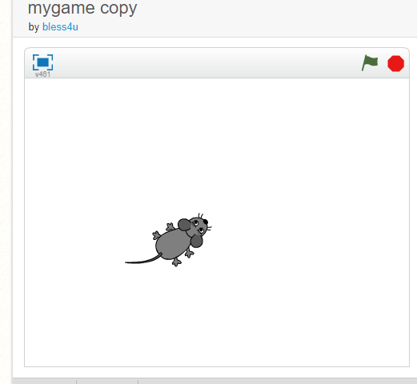

A foreverloop is created to aid the mouse to continues to follow the mouse pointer. The Mouse move forward seven steps with a waiting time of one second.
A conditional statement of if
is added. When the distance is greater than 20, then the mouse point towards the mouse pointer and move seven steps.
This implies if the pointer is less than 20 the mouse stop moving. The waiting time for the mouse movement is 0.05 second.
Click here to play the game
Use your mouse pointer and rotate it to the direction which you want the mouse mouse should move. The mouse pointer should be greater than 20px from the mouse, else the mouse will stop to move.